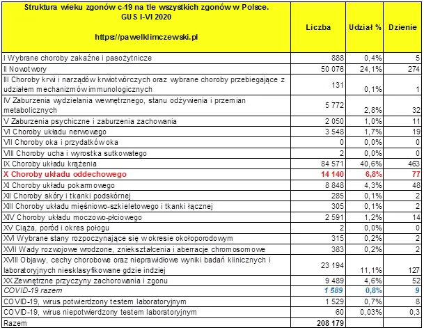
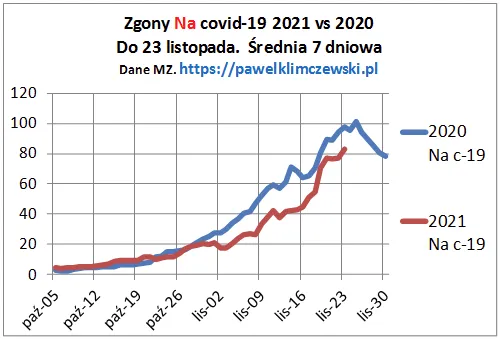

Byle do “100”
Byle do setki. I nie chodzi mi o naszych "nieśmiertelnych", co to boją się śmiertelnego zarażenia od śmiertelnych.
Od wiosny 2020 pisałem, że w Polsce do 100 zgonów dziennie "na płuca" to norma i nikt normalny nie powinien się tym przejmować. Jak będzie ponad to warto się przyjrzeć, czy coś dziwnego się nie dzieje. Tabela pokazuje pełną klasyfikację przyczyn zgonów i liczby z pierwszego półrocza 2020. Podobnie było przez wiele poprzednich lat. Nawet w obliczu zapaści służby zdrowia jesienią 2020 liczba ofiar covida nie przekroczyła tego poziomu. Dziś już nie musimy się rozwodzić. Przypomnijmy tylko:
1. Test pokazuje "coś"
2. Grypa zniknęła
3. Klasyfikacja zgonów covidowych dawała dodatkowe dochody

Typowa średnia liczba 77 zgonów dziennie na choroby układu oddechowego ma swoje roczne wahania z poziomem przeszło 100 w okresach zimowych. Dane są z pierwszego półrocza 2020 a dziś już wiemy, że jesienią wirus "zabił" dodatkowo przynajmniej tyle osób ile zapalenie płuc wiosną. Ale dlaczego w Polsce wirus czekał pół roku, gdy na świecie zabijał jak wściekły ? Nie pamiętacie ? Były wybory...
Jak widać "covidowe" zgony przebiegają wprost identycznie jak rok temu, mimo szczepień , lockdownu, maseczek, kwarantanny itp. Niestety panowie ministrowie, wniosek jest prosty: śmierci nie da sie zatrzymać !

Niestety, mamy obecnie poziom wszystkich zgonów podniesiony o około 40% z powodu wyżej wymienionych zabiegów i możemy się spodziewać, że ta krzywa przekroczy poziom roku ubiegłego. Myślę, że w obliczu "niemieckiego zwijania pandemii" nasi też zaczną hamować.
W swych publikacjach wykorzystałem już wszystkie obrazy Jacka Malczewskiego o zwykłej, ludzkiej śmierci, zamieszczam ponownie ten, który cieszył się największym zainteresowaniem.
Paweł Klimczewski